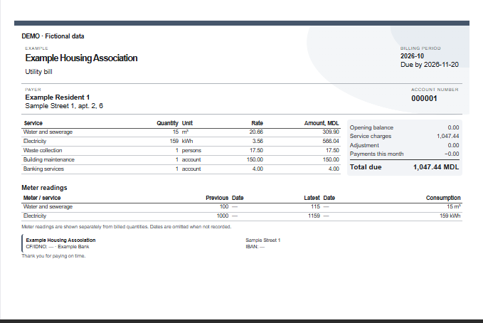

Accounts and residents
Open and close personal accounts, keep changes to residents and services, and set the number of people charged for waste collection each month.
Organisation and accountsKeep personal accounts, enter meter readings, record payments and prepare monthly bills. OpenHaU works offline and saves the association’s records in a database file you can move between computers.
Windows · macOS · English, Romanian and Russian
House & Utilities
By Oldschool Network
Menus, separate working windows and quick access to the tools used every month.


Accounts, services and their history stay connected throughout the billing cycle.
Open and close personal accounts, keep changes to residents and services, and set the number of people charged for waste collection each month.
Organisation and accountsIndividual and shared meters, dated readings, tariff history and monthly exceptions when allocating differences between a shared meter and its consumers.
Meter readings and chargesBatch payment entry, allocation by service debt, account and service balance reports, and payment reports. Preview documents before printing or exporting PDF, XLSX or CSV.
Payments and reportsSelect the month, choose a design and add the organisation’s logo. Set the payment deadline and choose which meter readings and optional columns appear on the bill.
Use the built-in designs or the receipt editor. Save appearance configurations, print the selected layout or save a PDF.
Receipt settings
Save, move and back up the association’s records without a cloud account.
The editable JSON-based ODB file holds the organisation, accounts, history and settings. Save writes changes back to the selected file.
Files and backupsProtect a database with a password and configure automatic backup copies to a selected location.
Database protectionInspect, query and edit databases from the command line. Writes validate the database, check its revision and retain a backup.
Commands and examplesOpenHaU 26.2.4
Requires Microsoft Edge WebView2. The installer can download it if it is missing.
Download for WindowsInstalled versions can check for updates in Settings → Updates.
Intel and Apple Silicon. macOS Monterey 12.6 or later. Drag OpenHaU to Applications.
Download for MacLocally signed; not notarized by Apple. macOS may request first-launch approval.
Installation helpRelease notes and checksumsQuick start guide · RU / RO / ENLocal API package
Installation, the monthly workflow, receipt settings, backups and API commands.